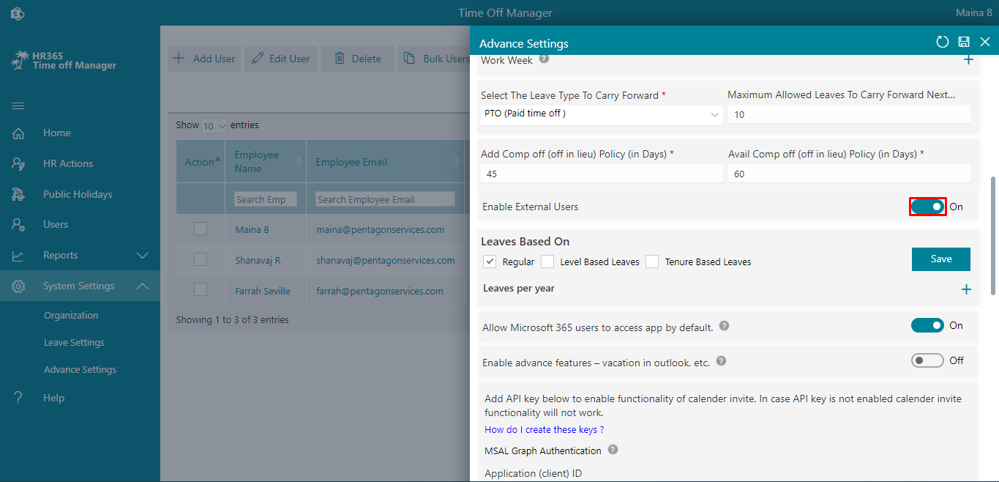

Advance Settings
From here you can add approvers, notifications to approvers, allow negative leaves, change date format, theme color, company or brand logo and icon, Graph API Integration and Auto approvals etc.Calculate leaves include weekends / holidays
In case you want to include weekends as leaves, you can enable switch. Users are allowed to apply leaves for weekend.HR Approvers
You can add HRs for approvers by entering their names or email IDs and click on save icon.Additional Approvers
If you want the leaves to be approved by additional approvers, you can enable it.Reminder notifications to approvers
If any approver forgets to approve the leave, a reminder email notification will be sent, if you enable it.Allow Negative Leaves
If this is enabled, users are allowed to request the leaves even though leaves are not available.Allow Backdate leaves
If this is enabled, users are allowed to submit back date leaves by X days.Leave Accrual
: It is the amount of vacation time that an employee has earned as per a company's employee benefits policy, you can enable it if you want.Allow External Domains
: You can add External or guest users’ domains separated by comma, e.g.: xyz.com, abc.com. You can allow guest user to request the leaves.-
Annual Leave Start Date and Annual Leave End Date
You can mention the annual leave start date and end date here. If accrued leaves are enabled, leaves will be calculated and allocated to users based on these date and date of joining of the candidate.
example:
let say
candidate joining date = 15th March 2021.
Annual Start date= 1st Jan 2021
Annual End Date = 31st Dec 2021.
Casual Leaves = 24.
If accrued is disabled, candidate allocated leave would be (24 leaves /12 month) * Remaining months i.e., 9 months = 18 Leaves allocates for a years
If accrued is enabled and type is Monthly, for march month allocated leave will be 2 and it increase by 2 on every month.
If accrued is enabled and type is quarterly
24 leaves/ 3 quarter for year = 8 leaves for each quarter
Now (1st quarter= 8 leaves) / 4 months = 2 leaves 2 leaves * 2 months (remaining months to complete one quarter) = 4 leaves allocates in first quarter and then 8 leaves would allocate for in each quarter automatically.
If accrued is enabled and type is half yearly. 24 leaves / 2 = 12 leaves for half year 6 months - 3 months (remaining months to complete half year) = 3 months Now 12 leaves / 6 months =2 leaves for each month.
2 leaves * 3 months = 6 leaves allocates in first half year and 12 leaves in next half year automatically
Allocated leaves Date Format
If you change the date format, it will update in entire application.Total Hours In Work Week
Here, you can add total working hours in a week.Work Week
In this table add 0 in the cell for weekend Leave calculation will be done based on work daysSelect The Leave Type To Carry Forward
You can select the leave type and enter number of leave which would be carried forwardMaximum Allowed Leaves To Carry Forward
You can enter the maximum number of leaves that can be carry forwarded.Add Comp off (off in lieu) Policy (in Days)
Here number can be entered in days that user can allowed to send add comp request for worked days within specified past daysAvail Comp off (off in lieu) Policy (in Days)
Here number can be entered in days so that users are allowed to take the comp off leave within specified time period else comp leave will be cancelled.Enable External Users
You can enable it if you want to allow external users.Leaves Based On
Leaves are based on 3 categories: If you want to enable it just select check box and click on save button.
- Regular: Here you can enter the total number of leaves. This leave allocates for all users based on date of joining and accrued (optional). If you want change leave for particular user, it can we done from user page.
- Level Based Leaves: If this is enabled, level-based leaves and grades options Will display under systems settings from where we have to first define grades for different job tile in grades then we have added leaves numbers for such grades from leave based option
- Tenure Based Leaves: If this is enabled, tenure-based leaves options., will display under systems settings from we you can assign leaves based on tenure.
Allow Microsoft 365 users to access app by default.
Here, you will find all the information of the users leave balance and can check leave of users based on department and location. You can also generate the report by clicking on export button.Enable advance features – vacation in outlook, etc.
Here, you will find all the information of the users leave balance and can check leave of users based on department and location. You can also generate the report by clicking on export button.Add API key
Here, you will find all the information of the users leave balance and can check leave of users based on department and location. You can also generate the report by clicking on export button.Auto approval of first approvers
Here, you will find all the information of the users leave balance and can check leave of users based on department and location. You can also generate the report by clicking on export button.Auto approval of secondary approvers
Here, you will find all the information of the users leave balance and can check leave of users based on department and location. You can also generate the report by clicking on export button.Auto approval of tertiary approvers
Here, you will find all the information of the users leave balance and can check leave of users based on department and location. You can also generate the report by clicking on export button.Auto approval exception
Here, you will find all the information of the users leave balance and can check leave of users based on department and location. You can also generate the report by clicking on export button.Calculate leaves based on hourly basis
Here, you will find all the information of the users leave balance and can check leave of users based on department and location. You can also generate the report by clicking on export button.Second level approval for leave cancellation
Here, you will find all the information of the users leave balance and can check leave of users based on department and location. You can also generate the report by clicking on export button.Display title
Here, you will find all the information of the users leave balance and can check leave of users based on department and location. You can also generate the report by clicking on export button.Enable recurrence of Time Off
Here, you will find all the information of the users leave balance and can check leave of users based on department and location. You can also generate the report by clicking on export button.Color code in calendar by
Here, you will find all the information of the users leave balance and can check leave of users based on department and location. You can also generate the report by clicking on export button.Leaves Reordering
Here, you will find all the information of the users leave balance and can check leave of users based on department and location. You can also generate the report by clicking on export button.Brand Logo
Here, you will find all the information of the users leave balance and can check leave of users based on department and location. You can also generate the report by clicking on export button.Brand Icon
Here, you will find all the information of the users leave balance and can check leave of users based on department and location. You can also generate the report by clicking on export button.Predefined Themes
Here, you will find all the information of the users leave balance and can check leave of users based on department and location. You can also generate the report by clicking on export button.
